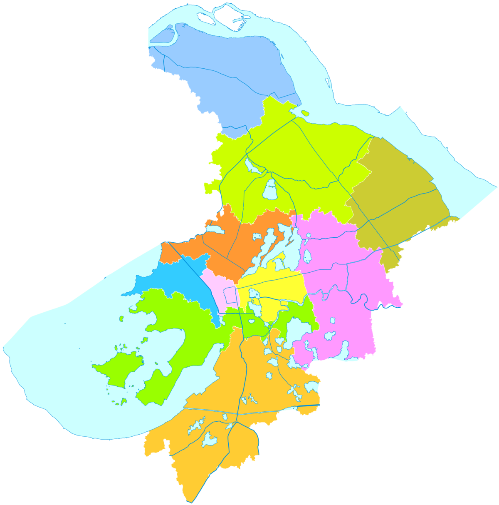
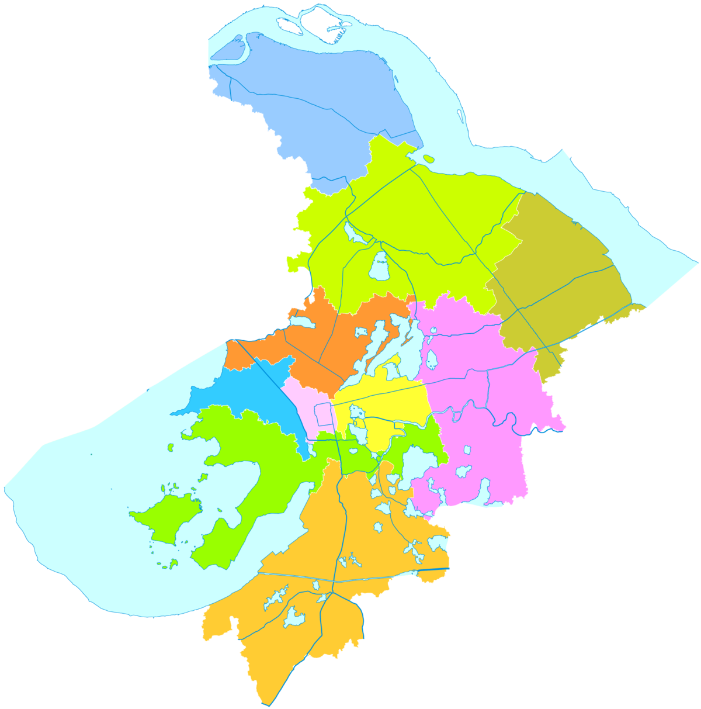

Pour récapituler, après moultes péripéties (vol annulé, problèmes administratifs, quarantaine diverses et variées…), nous sommes finalement arrivés à Suzhou fin août juste à temps pour la rentrée de Paul-Henry à l’université !
Pour ceux à qui on a pas déjà raconté les détails, voilà les grandes lignes de notre été :
- Nous avons quitté notre appartement de Morat fin mai.
- Un mois de voyage à travers la France pour profiter de la famille et des amis.
- Nous devions partir début juillet pour la chine et là deux jours avant le départ : vol annulé … Raison ? Mystère.
- De là intenses journées à rechercher un autre vol/hôtel de quarantaine (ce n’est vraiment pas aussi simple qu’il n'y parait !) et interrogations métaphysiques sur notre avenir: partir ou ne pas partir telle est la question…
- Finalement, au moment de baisser les bas, nous trouvons une solution et embarquons pas très rassurés et priant pour ne pas avoir le covid (qui nous fermerait définitivement les portes de la Chine) le 27 juillet.
- Notre vol n’est évidemment pas un vol direct pour Suzhou (cela aurait été trop simple !), nous faisons une première étape à Hong Kong puis direction Chongqing (en chine continentale dans la province du Sichuan, à presque 2000kms de Suzhou).
- Nous avons la chance de bénéficier d’une première semaine de quarantaine à Hong Kong puis de nouveau de 10 jours une fois arrivés à Chongqing avant de pouvoir enfin rejoindre Suzhou.
- Entre les quarantaines, nous avons quand même pu visiter Hong Kong et respirer le grand air enfin… avec nos masques bien sûr et accessoirement 90% d’humidité !
- Finalement notre dernière étape après la quarantaine à Chongqing : 10 heures de train grande vitesse pour traverser la Chine d’Ouest en Est et arriver enfin … dans notre nouveau chez nous !
Enfin, tout ça pour vous dire qu’après un été riche en rebondissements, ca y est on y est, on vit en Chine ! Alors la Chine c’est comment ? Immense déjà… Pour le moment on est pas vraiment sortis de notre quartier mais pour vous donner une idée : depuis la gare centrale (il y a 3 gares à Suzhou) nous avons fait environ une heure de taxi pour arriver à notre résidence… Alors bien sûr notre quartier n’est pas en centre ville mais quand même ! Le nombre d’étudiants du campus où travaille Paul-Henry représente la moitié de la population de Neuchâtel… Ici les immeubles ont tous en moyenne 20 étages. Tout est vraiment à une autre échelle.
Nous avons eu la chance d’arriver à la fin de la période de canicule et heureusement parce que les premiers jours c’était l’enfer : merci l’humidité ! Nous sommes au Nord du Sud de la Chine (je ne sais pas si c’est très clair), l’humidité est donc bien moins présente qu’à Hong Kong mais quand même ce n’est pas la France ni la Suisse ! Le temps pour nous en ce moment est donc plutôt agréable, ce qui est chouette pour pouvoir se déplacer.
Les déplacements parlons en : ici le moyen de transport à la mode est le e-bike, en vrai cela ressemble à un scooter mais électrique donc complètement silencieux ! Aux heures de pointes, les rues en sont remplies. Il y a aussi beaucoup de vélos en libre service, très pratique !
Sinon, pour la vie quotidienne, trouver des repères prend du temps : ici tout est en chinois bien évidemment. Autant vous dire qu’il va me falloir un petit moment avant de décrypter les caractères chinois ! Heureusement pas mal d’indications dans la rue sont traduites en alphabet romain, ce qui aide beaucoup. Mais, au quotidien, tout devient une aventure : faire une machine, faire les courses, se déplacer d’un point à un autre. Nous avons rencontré des françaises qui nous ont bien aidé pour « survivre » mais on est encore loin d’être autonomes !
Malgré pas mal de galères et beaucoup de temps à essayer de comprendre notre nouvel environnement, on passe de bons moments : repas partagés au fil des rencontres, cours de tango, visite du « vieux » Suzhou (le quartier historique)…
On vous laisse sur quelques photos de Hong Kong et Suzhou. Suzhou, on n'a encore pas vraiment fait les paparazzis on est trop absorbés par le reste !
Suzhou se prononce plus ou moins Soujhô et s'écrit 苏州. La ville est situé à l'extrême est de la Chine (le point rouge sur la carte), à 1 heure seulement de Shanghai. La carte de droite montre les quartiers de Suzhou; nous vivons dans celui en jaune — Suzhou industial park ou 工业园区 — juste à droite des deux petits lacs. Comme vous pouvez le voir, il y a beaucoup d'eau !
 
